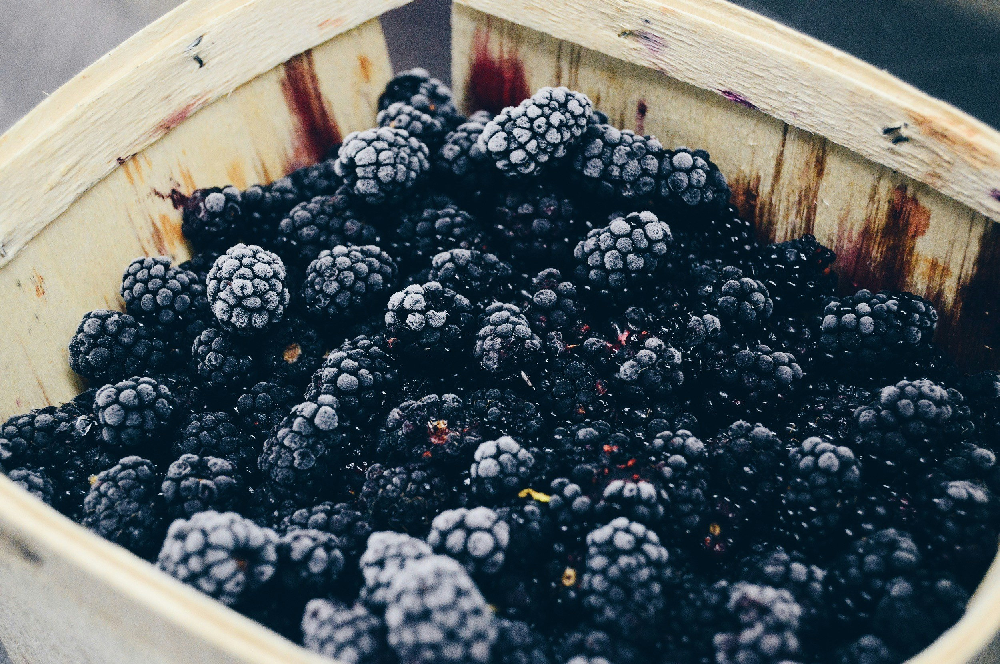

Avocado

Avocados are nutrient-dense fruits packed with healthy monounsaturated fats, fiber, vitamins, and minerals. They are known for their creamy texture and versatility in culinary applications. Here are some key benefits and characteristics of avocados:
Nutritional Benefits:
Heart Health: Avocados are rich in monounsaturated fats, which can help lower bad cholesterol levels and reduce the risk of heart disease. They also provide potassium, which supports blood pressure regulation.
Diabetes Management: Their low glycemic index and high fiber content make them suitable for maintaining stable blood sugar levels.
Eye Health: Avocados contain lutein and zeaxanthin, carotenoids that protect the eyes from damage caused by UV light and may reduce the risk of cataracts and macular degeneration.
Weight Management: Despite being high in calories, avocados' fiber and healthy fats can promote satiety and support weight management efforts.
Storage and Ripening:
Avocados ripen after being harvested. To speed up ripening, place them in a paper bag with a banana or apple. Once ripe, they can be stored in the refrigerator for a few days. To prevent browning of cut avocados, sprinkle with lemon or lime juice and store in an airtight container.
Culinary Uses:
Avocados can be diced and added to salads, blended into smoothies, mashed as a spread on toast, or used as a substitute for butter in baking recipes. They are also commonly used in guacamole and as a topping for various dishes, providing a rich, creamy texture.
Papaya

Papayas are tropical fruits known for their sweet flavor and vibrant orange flesh. They offer numerous health benefits due to their rich nutrient profile.
Nutritional Benefits:
Digestive Health: Papayas contain the enzyme papain, which aids in digestion and can help relieve constipation.
Immune Support: High in vitamin C, papayas help boost the immune system. They also contain vitamin A, which is essential for skin and eye health.
Anti-inflammatory Properties: The fruit is rich in antioxidants such as beta-carotene, which help reduce inflammation and oxidative stress.
Culinary Uses:
Papayas can be eaten fresh, added to fruit salads, blended into smoothies, or used in salsas and desserts. The seeds are also edible and have a peppery taste, often used as a spice.
Banana

Bananas are one of the most popular fruits globally, known for their convenient natural packaging and numerous health benefits.
Nutritional Benefits:
Energy Boost: Bananas are an excellent source of quick energy due to their high carbohydrate content.
Heart Health: Rich in potassium, bananas help maintain healthy blood pressure levels.
Digestive Health: Their fiber content aids in digestion and can help prevent constipation.
Culinary Uses:
Bananas can be eaten on their own, sliced into cereals or yogurts, blended into smoothies, or used in baking (e.g., banana bread).
Cherries

Cherries are small stone fruits that are both delicious and packed with nutrients.
Nutritional Benefits:
Antioxidant Rich: Cherries are high in antioxidants, particularly anthocyanins, which help reduce inflammation and may lower the risk of chronic diseases.
Sleep Aid: They contain melatonin, which can help regulate sleep cycles.
Pain Relief: Some studies suggest that cherries can help reduce symptoms of arthritis and gout.
Culinary Uses:
Cherries can be eaten fresh, added to salads, made into jams, or used in desserts like pies and tarts.
Pear
Pears are juicy and sweet fruits that offer a range of health benefits.
Nutritional Benefits:
Digestive Health: Pears are high in dietary fiber, which supports healthy digestion.
Heart Health: Their fiber content also helps reduce cholesterol levels.
Antioxidants: Pears contain vitamins C and K, which help protect cells from oxidative damage.
Culinary Uses:
Pears can be eaten fresh, poached, added to salads, or used in baking.
Pineapple

Pineapples are tropical fruits known for their sweet and tart flavor.
Nutritional Benefits:
Digestive Health: Pineapples contain bromelain, an enzyme that aids in digestion.
Immune Support: High in vitamin C, pineapples boost the immune system.
Anti-inflammatory: Bromelain also has anti-inflammatory properties.
Culinary Uses:
Pineapples can be eaten fresh, juiced, added to fruit salads, or used in cooking (e.g., pineapple chicken).
Watermelon

Watermelon is a refreshing fruit high in water content, perfect for hydration.
Nutritional Benefits:
Hydration: With over 90% water, watermelon is excellent for keeping hydrated.
Antioxidants: It contains lycopene and vitamin C, which help combat oxidative stress.
Muscle Soreness: Some studies suggest that watermelon juice can help reduce muscle soreness after exercise.
Culinary Uses:
Watermelon can be eaten fresh, blended into smoothies, or added to salads.
Blueberry

Blueberries are small, nutrient-dense berries known for their high antioxidant content.
Nutritional Benefits:
Brain Health: Blueberries have been linked to improved brain function and a reduced risk of cognitive decline.
Heart Health: They help lower blood pressure and cholesterol levels.
Antioxidant Rich: Blueberries are high in vitamins C and K, and other antioxidants.
Culinary Uses:
Blueberries can be eaten fresh, added to cereals or yogurt, blended into smoothies, or used in baking.
Cantaloupe Melon

Cantaloupe melons are sweet and hydrating fruits, perfect for summer.
Nutritional Benefits:
Hydration: High water content makes cantaloupes excellent for hydration.
Immune Support: Rich in vitamins A and C, cantaloupes help boost the immune system.
Digestive Health: The fiber content aids in digestion.
Culinary Uses:
Cantaloupes can be eaten fresh, added to fruit salads, or blended into smoothies.
Blackberry
Blackberries are nutrient-rich berries with a sweet-tart flavor.
Nutritional Benefits:
Antioxidant Power: Blackberries are high in vitamins C and K, and other antioxidants.
Digestive Health: They are rich in fiber, which supports digestion.
Heart Health: Consuming blackberries can help lower cholesterol levels.
Culinary Uses:
Blackberries can be eaten fresh, added to cereals, made into jams, or used in desserts.